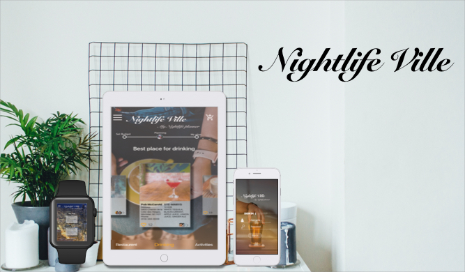
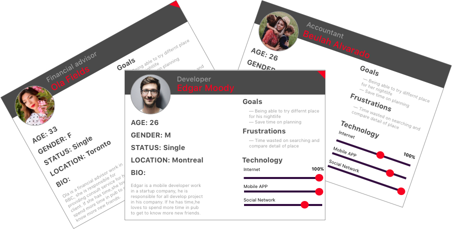
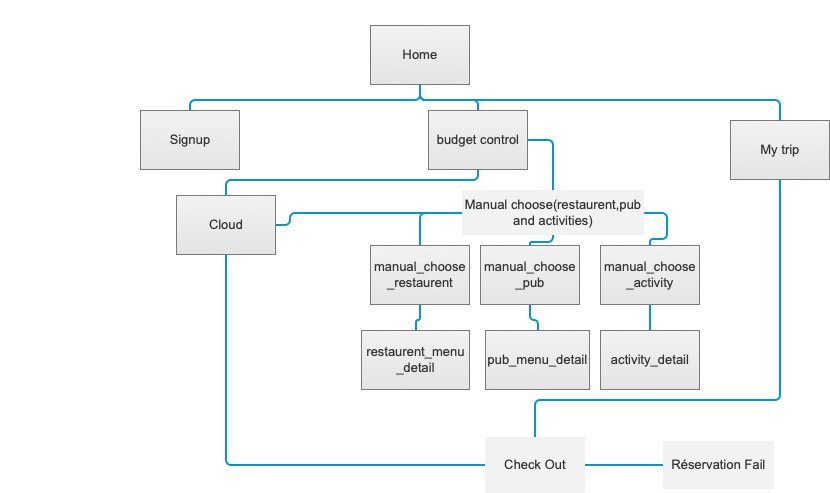
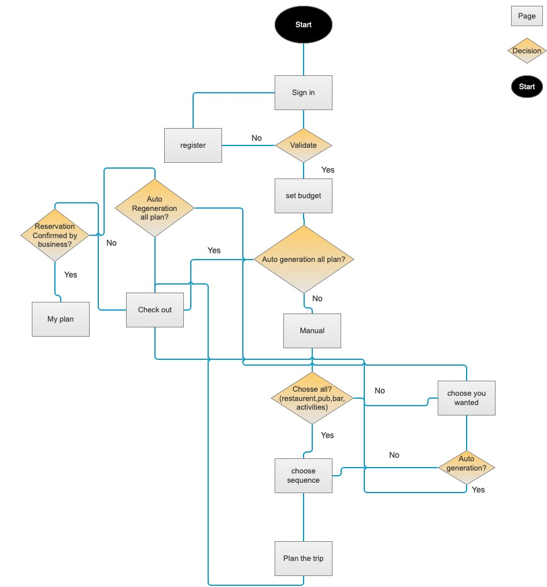
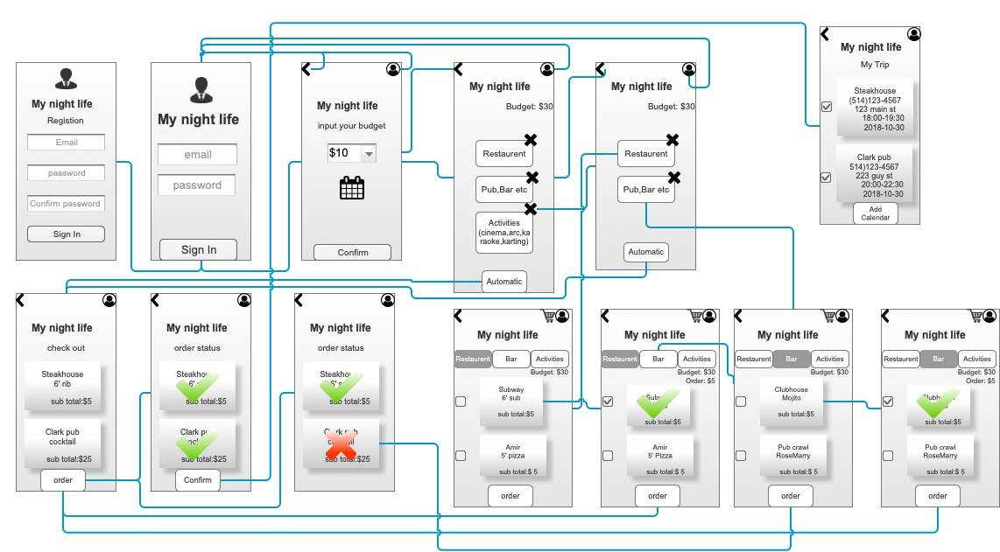

NightLife Ville
Stress and hassle free on planning your nightlife
Context
Introduction
"Nightlife Ville" is a simple utility app meant to make plan nightlife as simple as hailing a Uber
Problem statement and first action
When I was single, I’m always feel confused about what I can eat and where I can go for fun based on my budget, because I want to control my spending, so I have to set a budget for my nightlife. This is my own problem or the popular problem? As a designer I am always observe the problem around me and try to find a solution or ansIr for it, so I begin to conduct user research for this:
- The first I designed a very simple questionnaire sent to my colleague, friends, classmates then collect feedback from them. Do you need an APP to provide solution for your nightlife based on your budget?
- The second I conduct surveys on the road with the strangers.
- Third conduct research on the internet to check the website or app who can provide similar service.
As the feedback collected and results of research on the internet, 85% of feedback shown they like this idea and result of research on the internet shown no website or mobile app can provide service what I want. Based on this result, I make a decision I want to try it.
My roles and responsibilities
- My role: information architecture, User research, Interaction design, Visual design, Protyping & Testing
- Tools: Sketch, Axure and Paper
- Date: 12 2017
- Timeline: 4 Weeks
- Deliverables: High-fedelity prototype, interactive prototype
- Team: Passion project
Research
User & Audience
The target clients of nightlife ville are young persons who have strong preference for mobile-first.
They are heavy users of internet and mobile, so they want something that feel familiar to those experience, but more focus on mobile.
User research
Keeping my personas in mind, I wanted to capture the full user journey from researching through the physical visit to the place where they planned.
Personas
First hand observation
I conducted interviews with focus groups and observed the person how they search restaurant, pub or some place for leisure to gain their perspective on the user's experience . 90% of user using yelp.ca, mtlblog.com, social network to confirm their nightlife itinerary. The others using google. I noticed all the process will be stressful and boring for them. I also check research report and do some surveys on internet for address user behavior and attitudes.
The primary pain points are:
Competitive analysis
No website and mobile APP can provide similar service as I planned
Design
Design goal and challenges
Design goal
The nightlife ville is dedicated to helping user extricate from complicated and boring nightlife planning job.The goal of design is making this process be interesting, be fun, be simple,don’t be boring, like playing games.
Challenges
Finished all the design in 4 weeks, because this is a passion project, I worked it on my spare time, I have to finished research, analysis,design job in limited time.
Design process
This is a passion project means I don't have any business resource, I have to do everything by myself and work it on my spare time.
Site mapping
Fow now I have a comprehensive list of necessary, prioritized features for the new site, I mapped out the overall site structure. This helped me to narrow down the right navigation choices and which pages would be created.
Userflow
Wireframe -> test -> repeat
Low fidelity wireframes
The low fidelity wireframe used to convey meaning to the user or product owner, that’s very important to present and evaluate my idea. The biggest challenges in wireframing are conceptualizing a trouble free tools for nightlife planning.
Test and repeat
In testing, I was very concerned with finding out if my concepts for the nightlife planning, and the process of the nightlife planning was easy to understand. In testing with users and getting feedback from other designers, I gathered pages of necessary changes that would help users accomplish their tasks. I also learned that the planning process needs to be optimised and the number of budget unnecessary shows everywhere.
After redesign planning process and remove some budget tag in planning pages, I tested the new designs on users again, and felt confident moving forward. The structure was usable, logical, and familiar.
Final Design
The nightlife ville is dedicated to helping user extricate from complicated nightlife planning job.The nightlife ville will change this experience be interesting, be fun, don’t be boring, like playing games on your smartphone. From my research speaking with designer,sales person and potential user, I learned the user only need a beautiful,simple and useful tools to help them plan their nightlife.
For these reasons, Colors should be vibrant, content should be directed.I will use animation following to present what I design for the user.
Complete generate plan by system
After sign in and set the budget for nightlife, click cloud, the system will generate nightlife plan automatic and send reserve request, all the user did just wait, confirm, add to the calendar then enjoy.
After sign in and set the budget for nightlife, click manual, adjust nightlife planner as you want, then click cloud, the system will generate nightlife plan automatic and send reserve request, all the user did just wait, confirm, add to the calendar then enjoy. ( Manual + Automatic )
After sign in and set the budget for nightlife, click manual, the user can customize all the activity by himself, like where to eat, drink, and take some activities, then send reservation request and waiting for the response, if the reservation request denied, the user can come back to adjust the plan after all request approved the user can click add to the calendar and enjoy.
Conclusion and next steps
Outcomes
This project was purchased by an online reservation website and integrated into its system, increased 40% relative business revenue in the first 6 months.
Lesson Learned
This is passion project, it teach me how I can finished a project under limit time, limit fund, and no supervision.